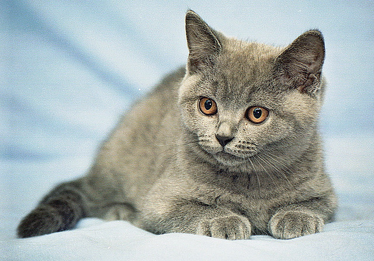

Kot Brytyjski
Pochodzenie
Brytyjczyki to przykład rasy, którą w dużej mierze ukształtowały warunki środowiskowe, w jakich przyszło im żyć. Zanim bowiem trafiły na wystawowe ringi świata, tępiły szkodniki na brytyjskich farmach. Musiały być więc sprawne, silne, mocne i odporne, a izolacja, jaką zapewniały Wyspy Brytyjskie, sprzyjała wykształceniu pewnych unikalnych cech.
Charakter i zachowanie
Mówi się żartobliwie, że koty brytyjskie krótkowłose są typowymi obywatelami swojego kraju – jak ich ludzcy opiekunowie, opanowane, flegmatyczne i zachowujące dystans. Potrafią mocno przywiązać się do opiekuna, ale są raczej powściągliwe w okazywaniu uczuć. Nie specjalnie przepadają za noszeniem na rękach i braniem na kolana. Przedstawiciele tej rasy są umiarkowanie aktywni. Raczej nie skaczą po meblach i nie wspinają się po zasłonach. Nie są też hałaśliwe.
Pielęgnacja
Koty brytyjskie krótkowłose nie wymagają wielkich zabiegów pielęgnacyjnych. Szczotkowanie raz na tydzień, kontrola stanu uszu i oczy, przycinanie pazurków, czyli standardowe zabiegi pielęgnacyjne. Kąpieli nie wymagają – do czyszczenia futra wystarczą odpowiednie pudry i lotony.